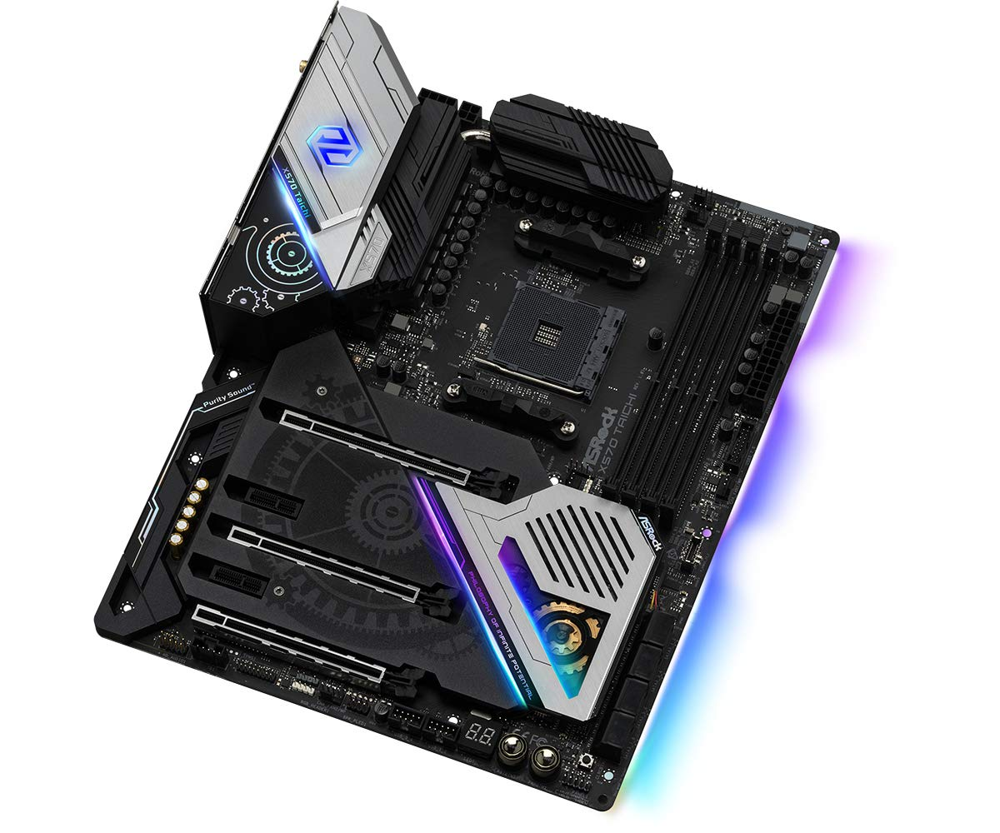

← Listeye Dön
🌐 Resmi Destek

ASRock X570 Taichi
AMD Ryzen 3000/5000 serisi için üst seviye X570 anakart, PCIe 4.0 desteğiyle.
Özellik
Değer
Soket
AM4
Chipset
AMD X570
RAM
4x DDR4 Slot
PCIe
PCIe 4.0 x16